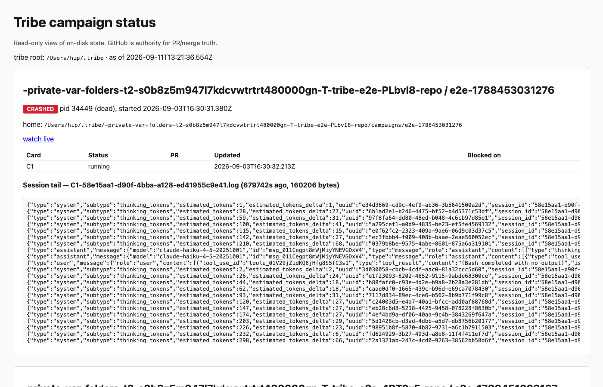
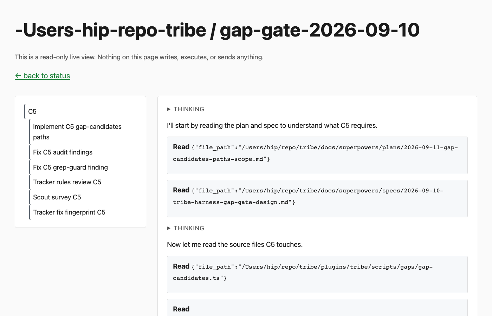
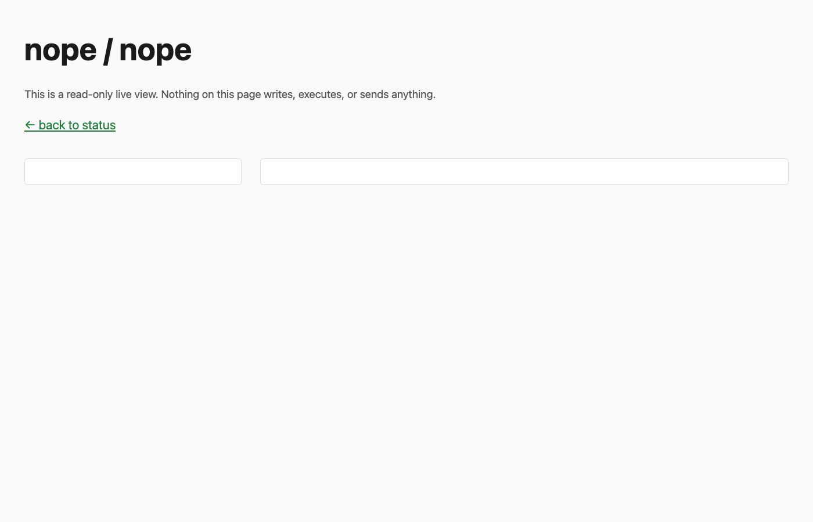

Decorate sessions
One screen. A session whose id matches a campaign card wears a small badge: campaign name, card id, card status, runner alive or dead. Escalation texts and log tails are dropped; you read those files directly.
one surfaceThe tribe viewer is a small web page that shows what the campaign runner is doing while it works unattended. You never install it and never open it on purpose: the runner starts it for you and prints a link. You have asked to replace it with one server that can show any transcript on this machine, the way you would open any file. Before deciding how, this page walks through what happens today when you follow that link, using real screens and real files from this machine, and ends with the one question that replacement needs you to answer.
Two words first. A campaign is a batch of roadmap cards the runner works through one after another without you. A transcript is the log file Claude Code writes for every session it runs, one JSON line per message, tool call and tool result. Everything the viewer shows comes from transcripts.
You type one command. The runner takes over from there.
bun plugins/tribe/scripts/runner/run.ts \
--repo /Users/hip/repo/tribe \
--model claude-opus-5 \
--home ~/.tribe/-Users-hip-repo-tribe/campaigns/gap-gate-2026-09-10Within a second, before the first card's session even starts, one line lands on your terminal:
campaign viewer: http://127.0.0.1:4321/live?repo=-Users-hip-repo-tribe&slug=gap-gate-2026-09-10 (read-only)That link is the only visual view the runner has. There is no flag to turn it on. The two odd values in it,
repo=-Users-hip-repo-tribe and slug=gap-gate-2026-09-10, are the
folder names of the campaign under ~/.tribe: the repo path with every slash turned
into a dash, and the campaign name. The viewer needs both to find the campaign's bookkeeping.
To understand every screen that follows, hold these two trees in mind. They are written by different programs and the viewer reads both.
~/.tribe/-Users-hip-repo-tribe/campaigns/gap-gate-2026-09-10/
campaign-state.json which cards exist, their status,
and the session id of each card
runs/2026-09-11T.../run.json
pid, start time, repo path,
path to campaign-state.json
runs/2026-09-11T.../logs/C5-<session>.log
the runner's own raw copy of the
stream it received from that session
escalations/*.md questions the runner parked
reports/*.md reports the worker agents wrote
answers.md your answers to escalationsThe runner writes this. It says which session belongs to which card, and
it keeps a raw debugging copy of each session's stream under logs/. That copy is
not what the viewer renders as a transcript; the transcript comes from the right-hand tree.
~/.claude/projects/-Users-hip-repo-tribe/
d7d21837-fe2e-4894-9c12-404d90663680.jsonl
card C5's session, 987 KB
d7d21837-fe2e-4894-9c12-404d90663680/subagents/
agent-a8881491d073e04ad.jsonl
agent-a8881491d073e04ad.meta.json
one pair per subagent the
session spawned (6 for C5)
5f01ddc5-....jsonl the session you are in now
(and every other session you ever ran here)Claude Code writes this, for every session, whether the runner started it or you typed
claude in a terminal. The runner never touches this folder.
The diagram follows one campaign start from your terminal to your browser. Read the boxed region as a fork: the runner either finds a viewer already listening on port 4321 or starts a new one.
Open http://127.0.0.1:4321/ with nothing after the slash and you get the status
page. It lists every campaign folder it can find under ~/.tribe, on every refresh,
newest first. This is what it shows on this machine right now.

Each campaign box has six parts, top to bottom:
/live link the runner printed, so you can jump to
Screen 2 for that campaign.logs/ file from Step 2. As the screenshot shows, those lines
are raw stream JSON such as
{"type":"system","subtype":"thinking_tokens",...}. They are not readable as a
conversation.The page has no filter and no limit. On this machine it renders 17 campaigns, most of them throwaway test runs under temporary folders, into one 387 KB page, and it rebuilds all of that on every refresh.
Follow the printed link and you get the live page for that campaign. Here it is for the gap-gate campaign, which finished earlier today.

The left column is the process list. The top entry, C5, is the card's own Claude Code session.
The six indented entries are the subagents that session spawned, named from the description in
each subagent's .meta.json file. Clicking one switches the right column to that
subagent's transcript.
The right column is the transcript. Each box is one message: a collapsed THINKING row, a sentence the assistant wrote, or a tool call with its input as raw JSON. New lines are appended within about half a second of Claude writing them.
Three things a first-time reader would expect are not there. A code audit run on 2026-09-11
(its notes sit next to this page as tribe-viewer-research.md) confirmed each is a
bug rather than a choice. The prompt the runner sent to start the card is not shown at all,
because prompts arrive as a list of text blocks and the page only handles plain strings. Every
tool call shows its input but never its output. The cause is a two-step slip: the server reads
the results from the file, then builds the first batch for the browser without them, and
nothing later fills the gap. And every THINKING row is empty,
because the sessions the runner starts write thinking blocks with no text in them.
This is what you get if you open the link in the first half minute of a run, before the card has a session id, or if the campaign name in the link is wrong.

All of these follow from one fact: the only address the viewer understands is a campaign, and it turns that campaign into a session id by reading ~/.tribe.
claude. It has no
campaign, so there is no link that reaches it, even though its transcript sits in the same folder
as C5's.bun serve.ts does
run alone, but with no campaign under ~/.tribe it shows "no campaigns recorded yet" and there is
nothing else to click.The agreed direction is one server over ~/.claude/projects, listing every session
on disk, with a React client (a browser user-interface library; you chose it so the viewer can
grow). The model for that list is Kanna, a separate open-source web UI for
Claude Code that shows every session folder on disk in a sidebar, whether or not it started them. In that world a campaign card's session is simply
one session among many. The open question is what happens to the facts that today live only on
Screen 1: which campaign a session belongs to, which card, whether the runner is alive, and
whether a card is parked on a question. Three shapes are possible.
One screen. A session whose id matches a campaign card wears a small badge: campaign name, card id, card status, runner alive or dead. Escalation texts and log tails are dropped; you read those files directly.
one surfaceTwo screens. A campaign index (badge, cards table, one link per card to its session) rebuilt in React next to the session browser. Escalation texts and log tails are still dropped.
two surfacesThe viewer never reads ~/.tribe. The runner prints a session link per card and that is the only bridge. Runner liveness and escalations are checked from files by hand.
smallestOption A is the recommendation: it keeps the one fact you actually use, the card-to-session mapping, without a second screen to maintain.